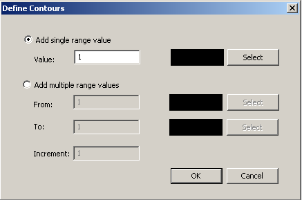

|
MapLink Pro Studio 11.1
|
|
MapLink Pro Studio 11.1
|
Colours are applied by MapLink Pro Studio to elevations and/or depths less than or equal to the level.
For example, with colours defined at 1 and 10 metres, elevations less than or equal to 1 metre will use the colour defined for the 1 metre level. Elevations greater than 1 metre, but less than or equal to 10 metres will use the colour defined for the 10 metre level.
To automatically generate the colour definitions simply click the auto button. A set of levels will be generated based upon the minimum and maximum elevations.
To add a new level, click the new button.

To edit an existing level:
To set a range of levels to a range of colours:
The Save button allows the Contour Levels to be saved to a file. The file format is comma delimited with the level in metres followed by the RGB values for the colour.
The Load button allows a previously saved Contour Levels file to be loaded.
The Automatically ramp colours checkbox, when checked, blends the colours between contour levels.